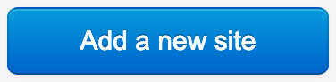
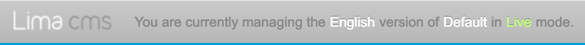
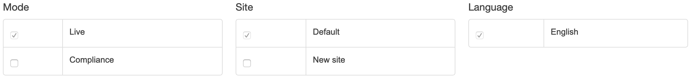

Adding a new Microsite
If you would like to synchronise your current content to a new microsite then you will need add a new site:
- Hover over the Settings tab at the top.
- Select Sites from the drop down menu.
- On the right-hand-side of the page there is a button called Add a new site, click this.

You will then need to enter details of the new site. The fields are:
Details tab
Name This is the admin name of the microsite.
Module This is the name of the folder in sites/. This is the same as the name without any spaces.
Title This is the Public title used in site meta.
Domains tab
Domain If you would like the micorsite to point to another domain you can add it here.
Please note If you are adding a new domain, please contact Copia to set up the serverside.
Synchronisation
Lima includes the ability to create different versions of the site, such as a draft verison, dependant on how the site has been set up.
When signed in as an administrator, you will see this bar at the top of the browser:

You can use this bar to switch between versions of the site, i.e. between Main and a Microsite, Live mode and Draft mode, and if applicable, different language versions of the site.
Synchronising to a new site
- Hover over the Synchronisation tab at the top.
- Select Everything from the drop down menu.
You will be presented a screen with two options:
Merge
A merge will copy across all changes between versions, but leave any new items (pages, menus, etc) in the destination variation.
Replace
Performing a replace will create an exact copy, removing any changes you might have made on the destination variation.
Once you select either Merge or Replace, you then can specify what you are synching and where to.

Mode This determines which draft of the site you will be synchronising from (Live is set by default).
Site This determines which version of the site you will be synchronising to (The main site is set by default).
Language This determines which language version you will synchronise.
Once you have set your preferences, click on the Synchronise button.